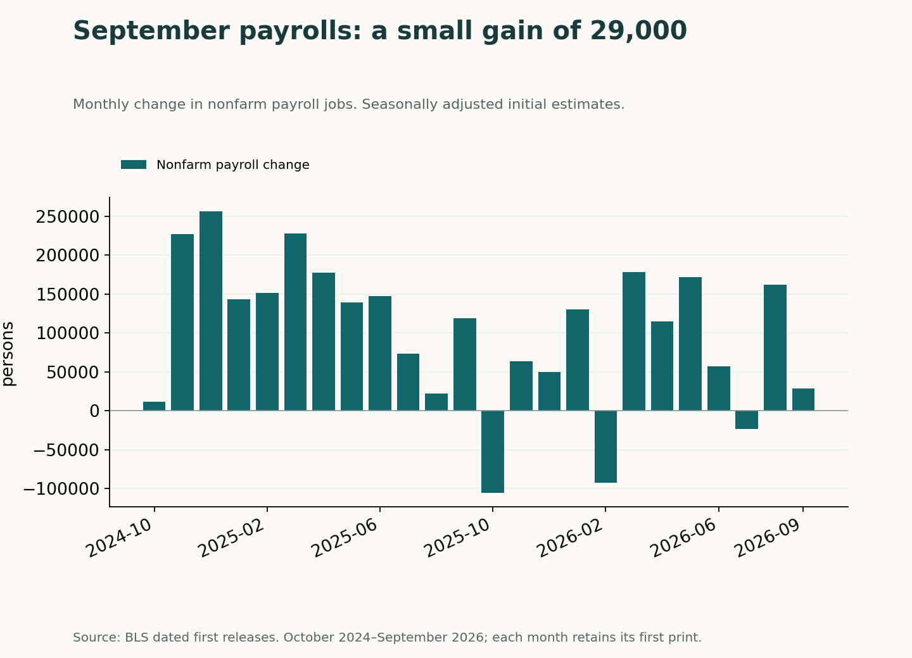
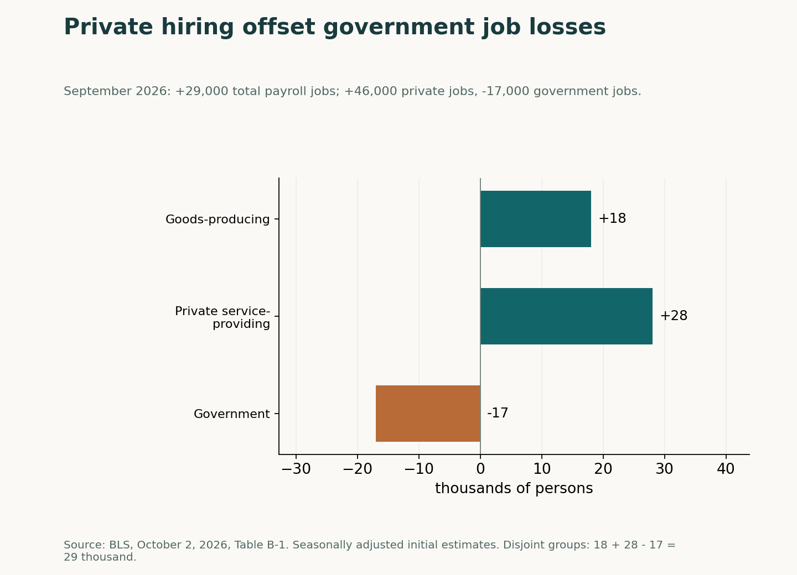
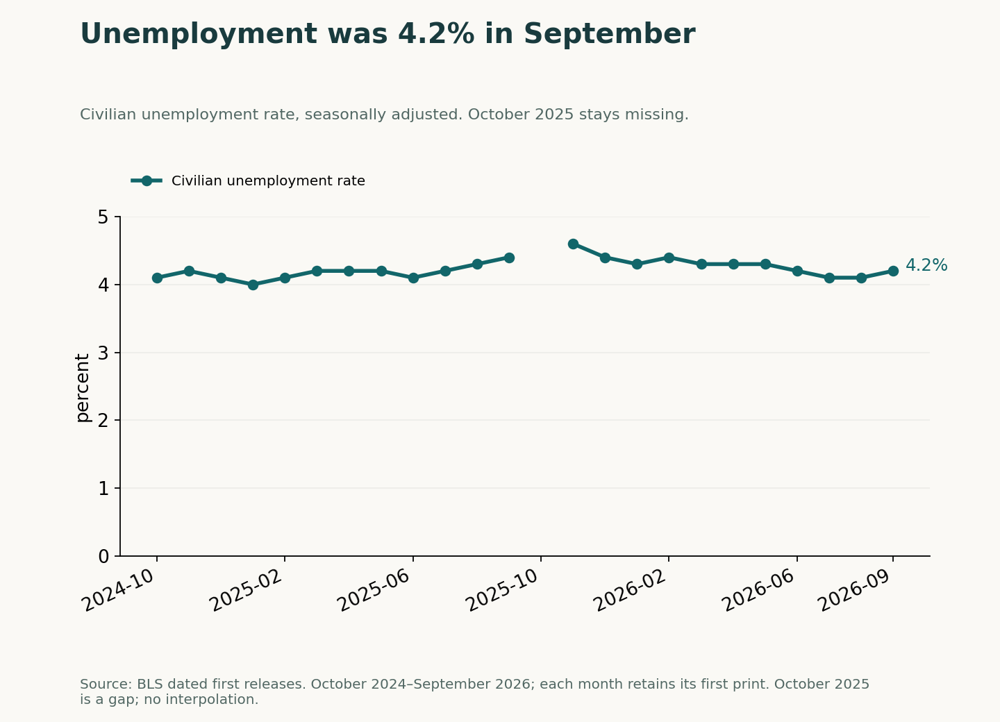
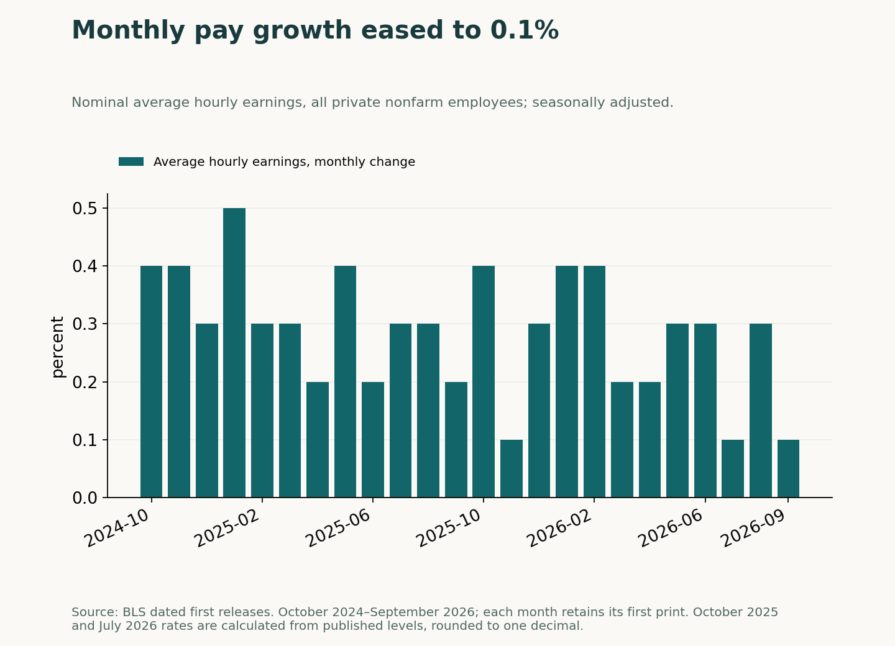

September's weak jobs total came with positive private hiring. In its October 2, 2026 release, the U.S. Bureau of Labor Statistics estimated that payrolls rose by 29,000. Private employers added jobs while government employment fell. Capital Chronicle's reading is that the composition matters to the diagnosis: a small net gain can coexist with continued private hiring.
A small gain in a volatile hiring record
September's initial 29,000 increase was much smaller than August's initial 162,000 gain. The comparison is between first published estimates: the chart keeps each month's initial number, without replacing older observations with later revisions.
The record also resists a simple story of uninterrupted decline. July's first estimate showed a loss of 23,000 jobs, followed by August's gain and September's smaller increase. For readers assessing hiring momentum, that volatility argues against letting one month's total carry the whole conclusion.

Private gains, government losses
The sector split explains the arithmetic. Goods-producing payrolls rose by 18,000 and private service-providing payrolls by 28,000. Total private employment increased by 46,000, while government payrolls fell by 17,000, leaving the overall gain at 29,000. These are seasonally adjusted changes from the same BLS release.
Government losses weakened the headline without turning the private-sector total negative. Capital Chronicle's inference is that the composition deserves attention before the small overall gain is read as broad private retrenchment. BLS described employment in all major industries as little changed.

Unemployment adds a separate test
The establishment payroll count and the household unemployment rate need separate readings. The 29,000 figure is a monthly change in payroll employment; the 4.2 percent figure is an unemployment rate. They are different measures, not competing versions of the same number.
September's unemployment rate was above August's first-reported 4.1 percent, but below the first-reported 4.6 percent for November 2025. That wider context gives a check on the payroll headline. October 2025 is unavailable in this unemployment history, so the chart leaves a gap rather than drawing a line across it.

Pay growth softened in September
Average hourly earnings for all private nonfarm employees rose by 0.1 percent in September, compared with 0.3 percent in August's first release. This is nominal monthly pay growth, not an inflation-adjusted measure of purchasing power.
The softer September pay reading adds context to the smaller payroll gain, but does not identify its cause. The earnings chart also distinguishes the October 2025 and July 2026 rates calculated from published levels and rounded to one decimal from rates explicitly reported in the releases.

What this report can establish
Private payrolls still grew, unemployment was 4.2 percent, and the U.S. Bureau of Labor Statistics described major-industry changes as small. That is the strongest countercase to a broad deterioration story: a weak headline could reflect a temporary mix of gains and losses, rather than persistent weakness.
From the October 2 vantage point, the next useful test would be whether private payroll gains weakened alongside a rising unemployment rate. That combination would challenge the sector-mix explanation; stronger private gains would support it. This retrospective makes no claim about subsequent outcomes.
Analysis, not financial advice. Readers decide whether to trade.
Analysis, not financial advice.